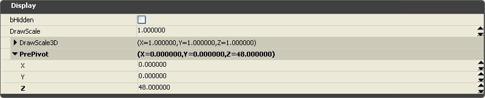
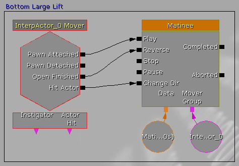

UDN
Search public documentation:
UsingInterpActorsCH
English Translation
日本語訳
한국어
Interested in the Unreal Engine?
Visit the Unreal Technology site.
Looking for jobs and company info?
Check out the Epic games site.
Questions about support via UDN?
Contact the UDN Staff
日本語訳
한국어
Interested in the Unreal Engine?
Visit the Unreal Technology site.
Looking for jobs and company info?
Check out the Epic games site.
Questions about support via UDN?
Contact the UDN Staff
UE3主页 >Kismet可视化脚本 > 使用InterpActors
UE3主页 > Matinee & 过场动画 > 使用InterpActors
UE3 主页 > 过场动画制作人员 > 使用InterpActors
UE3主页 > Matinee & 过场动画 > 使用InterpActors
UE3 主页 > 过场动画制作人员 > 使用InterpActors
使用InterpActors
概述
是StaticMesh Actor(静态网格物体Actor)的特殊的动态版本。它支持各种类型的物理，它使用动态光照，可以通过使用Unreal Kismet及Matinee对其进行各种各样的控制，并且它可以播放特定actor状态的多种声音。
对于那些熟悉以前版本的虚幻引擎的用户来说，InterpActor是虚幻引擎3中的 Mover(移动者) 。 任何标准的静态网格物体都可以被用作为一个InterpActor 。当把它插入到地图中时，除了正交视口中InterpActor的紫红色线框颜色外，它的渲染方式和标准的静态网格物体一样。也可以通过像StaticMesh(静态网格物体)actors一样的方式来移动、缩放及旋转InterpActor 。
InterpActors的种类：
 插入一个InterpActor
使用和静态网格物体一样的方法来把InterpActor插入到地图中。
-请确保当前启用了Drag Grid(拖拽网格)并设置Drag Grid(拖拽网格)的大小在4到32之间。
插入一个InterpActor
使用和静态网格物体一样的方法来把InterpActor插入到地图中。
-请确保当前启用了Drag Grid(拖拽网格)并设置Drag Grid(拖拽网格)的大小在4到32之间。-在通用浏览器对话框中选择需要的静态网格物体。
-右击其中一个视口来显示弹出菜单。
-选择“添加Actor”菜单项来显示它的弹出菜单。
-然后点击"Add InterpActor(添加InterpActor): StaticMesh(静态网格物体) <selected static mesh name(选中的静态网格物体的名称)>"菜单项来插入InterpActor。 InterpActor看上去和插入的静态网格物体版本一样，除了它的线框是红紫色而不是青绿色。
 InterpActor的原点和支点
InterpActors的旋转中心的基本位置和支点是基于静态网格物体的原点和指点的，所以创建的所有用作为InterpActors的网格物体模型的支点必须是基于那个网格物体的支点的中心。比如，大多数的门的支点都在门折页所在面的角落上，电梯的平台的支点通常在基座的中心，抽风机的节点将在刀片组成的中心点。
以下静态网格物体线框图片显示了每种InterpActor类型的支点：
InterpActor的原点和支点
InterpActors的旋转中心的基本位置和支点是基于静态网格物体的原点和指点的，所以创建的所有用作为InterpActors的网格物体模型的支点必须是基于那个网格物体的支点的中心。比如，大多数的门的支点都在门折页所在面的角落上，电梯的平台的支点通常在基座的中心，抽风机的节点将在刀片组成的中心点。
以下静态网格物体线框图片显示了每种InterpActor类型的支点：
 如果要把支点位置设计的不正确的StaticMesh(静态网格物体)用作为InterpActor，可以通过修改Display.PrePivot属性来修改当前插入的对象实例的支点位置。如果已经知道支点偏移量，仅需要简单地输入X、Y、Z值到属性中即可。如果不知道偏移量，那么使用编辑器测量工具(Ctrl +鼠标中间键)来决定偏移量或者简单地输入数值知道InterpActor网格物体按照期望和它的指点对其为止。
如果要把支点位置设计的不正确的StaticMesh(静态网格物体)用作为InterpActor，可以通过修改Display.PrePivot属性来修改当前插入的对象实例的支点位置。如果已经知道支点偏移量，仅需要简单地输入X、Y、Z值到属性中即可。如果不知道偏移量，那么使用编辑器测量工具(Ctrl +鼠标中间键)来决定偏移量或者简单地输入数值知道InterpActor网格物体按照期望和它的指点对其为止。

一旦插入了InterpActor，则必须设置特定属性以及可能的Kismet和Matinee来使actor按照期望的效果进行移动。请参照以下主题中关于各种常用的InterpActor类型的介绍。光照InterpActors
 光照环境
文档正在建立中
使用光照通道
UE3支持6中用户定义的光照通道，它们被称为 Unnamed_1 到 Unnamed_6 。用户自定义的通道允许自定义的光照仅限制到场景中定义的一组物体上。通过根据需要放置一个或多个DirectionalLight、PointLight、SkyLight 或 SpotLight actors，并选择一个和InterpActor上的同样通道相对应的Unnamed_*通道，这些光源将会影响InterpActor。
照亮一个InterpActor简单方法是 仅 设置InterpActor的DynamicSMActor.StaticMeshComponent.Lighting.LightingChannels.Dynamic 和 .Unnamed_1为真，这使得InterpActor既可以显示像来自射弹的动态光源也可以显示那些设置为同一个光照通道的用户自定义光源。然后将一个点光源放置到相对于InterpActor的适当位置，并 仅 设置Light.LightComponent.LightingChannels.Unnamed_1光照通道为真。
光照环境
文档正在建立中
使用光照通道
UE3支持6中用户定义的光照通道，它们被称为 Unnamed_1 到 Unnamed_6 。用户自定义的通道允许自定义的光照仅限制到场景中定义的一组物体上。通过根据需要放置一个或多个DirectionalLight、PointLight、SkyLight 或 SpotLight actors，并选择一个和InterpActor上的同样通道相对应的Unnamed_*通道，这些光源将会影响InterpActor。
照亮一个InterpActor简单方法是 仅 设置InterpActor的DynamicSMActor.StaticMeshComponent.Lighting.LightingChannels.Dynamic 和 .Unnamed_1为真，这使得InterpActor既可以显示像来自射弹的动态光源也可以显示那些设置为同一个光照通道的用户自定义光源。然后将一个点光源放置到相对于InterpActor的适当位置，并 仅 设置Light.LightComponent.LightingChannels.Unnamed_1光照通道为真。通过使用这6个用户自定义的Unnamed_* 关照通道，通常已经有足够的光照通道来满足自定义光照的需要了。 如果其它的场景中的静态光源太复杂，以下使用用户自定义的光照通道可能会在和其它的场景中的静态光源匹配时出现问题，且仅有6个Unnamed通道可以使用。

常见的InterpActor属性
Door(门)
Elevators(电梯)
Lifts(电梯)
2. 把InterpActor 插入到地图中，并放置到您想放置的位置。
3. 打开actor属性，并设置一下值：
- Collision.BlockRigidBody = True.
设置这项是为了使玩家及AI可以碰撞 和/或 站在InterpActor的上面。默认值为False。 - Collision.CollisionType = COLLIDE_BlockAll
设置这项是为了使得InterpActor可以和其它的actors进行碰撞并投射阴影。
- 根据需要设置Display.DrawScale 和 Display.DrawScale3D.X,Y,Z。
设置这项是为了设置InterpActor的大小。默认情况下这些所有值都为1.0。
- 根据需要设置DynamicSMActor.LightEnvironment.DynamicLightEnvironmentComponent.AmbientGlow.A,R,G,B 的值
以便获得InterpActor额外亮度。这些值默认为A = 1.0, R = 0.0, G = 0.0, B = 0.0。 - DynamicSMActor.LightEnvironment.bCastShadows = True.
如果您不想让InterpActor投射阴影，那么可以设置这项为False。该项默认为True。 - DynamicSMActor.LightEnvironment.LightEnvironmentComponent.bEnabled = False.
如果对这个InterpActor使用了LightEnvironment，那么设置这项为真。
- InterpActor.bContinueOnEncroachPhysicsObject = True.
即使PHYS_RigidBody actor在InterpActor附近时，InterpActor是否仍然可以继续。该项默认为True。 - InterpActor.bDestroyProjectilesOnEncroach = True.
当InterpActor合和弹体发生碰撞时，弹体是否爆炸。该项默认为True。 - InterpActor.bStopOnEncroach = True.
当InterpActor靠近另一个actor时，它是否停止。该项默认为True。
- Movement.Location 根据需要设置这项来决定在地图中放置InterpActor的位置。
- Movement.Physics = PHYS_Interpolating.
- Movement.Rotation.Pitch,Roll,Yaw 根据需要设置这项，来决定它在地图中放置方位。
- 选择InterpActor。
- 通过点击工具条上的”K”按钮来启动Unreal Kismet。
- 右击Kismet对话框来显示弹出菜单，选择"New Event Using InterpActor_x(使用InterpActor_x新建事件)"，然后选择"Mover"项。这将会创建一个具有默认Lift移动者风格的Kismet模板。
- 添加一个新的"Comment (wrap)[注释]"到Kismet中，并为它设置一个类似于"Left Lift"的名称，并使它将序列包围起来。
Kismet Mover Event由InterpActor Mover和一个Matinee组成。
- 当Pawn (玩家或ai)走到Lift的上面时，它将会导致一个"Pawn Attached(附加Pawn)"事件来触发Matinee” Play(播放)”，这样将会开始播放Matinee运动轨迹(Matinee轨迹将会在下面进行讨论)。
-当Mover已经完成它的Open sequence(打开序列)时，也就是从关键帧0移动到最后一个关键帧时，它产生一个Mover "Open Finished"事件，它将会触发Matinee的"Reverse(倒回)"功能，它将会倒序播放Matinee的运动轨迹。
- Mover的"Hit Actor(撞击Actor)"事件，如果Mover碰撞一个Pawn时产生这个事件，这将会触发Matinee的"Change Dir(改变方向)"，它将会导致Matinee轨迹改变方向并使得Mover后退远离那个Pawn。

5. 为Lift动画创建Matinee值- 请确保在地图视口中选中了InterpActor。
- 双击Matinee设备或者右击并选择"Open UnrealMatinee(打开UnrealMatinee)"来显示Matinee编辑器对话框。
- 注意在中央面板的MoverGroup项，打开它可以显示在它下面的Mover轨迹。
- 如果"Toggle Snap"按钮没有处于打开状态，那么点击这个按钮，设置它为0.1s对齐(1/10秒)。
- 点击在对话框左侧的"Add Key(添加关键帧)"按钮(不要和同样图标的按钮"Toggle Snap"搞混)。
这将会事件位置0.0处添加关键帧。这将是Lift降低时的静止位置。 - 将黑色的滑块条拖拽为0.5s，再次点击"Add Key(添加关键帧)"来这里添加第二个关键帧。如果它稍微有带你不准，对齐工具将会把它放到0.5s处。
- 点击第二个关键帧的小的黄色 三角形/角锥 型，Matinee将会显示"OKey1"并且编辑器将会显示"ADJUST KEY 1(调整关键帧1)"。
- 将InterpActor移动到这个关键帧的位置。这将是Lift上升后的位置。
- 将粉色的Time End(事件终止)标志拖拽到时间为1.0s处。这决定了Lift在升高后位置停留的时间长度。
- 现在您可以拖拽事件滑块来查看运动了。
- 关闭Matinee和UnrealKismet。
 6. 像本指南前面所提到的那样来添加需要的光照类型。
添加Lifts的AI支持
尚未完成。
6. 像本指南前面所提到的那样来添加需要的光照类型。
添加Lifts的AI支持
尚未完成。
Rotators(旋转器) (风扇等)
2. 把InterpActor 插入到地图中，并放置到您想放置的位置。
3. 请确保actor的支点位置对于旋转器的旋转位置是正确的。
4. 打开actor属性，并设置一下值：
- Collision.BlockRigidBody = False.
如果InterpActor需要和刚体actors发生碰撞，那么设置这项为True。默认值为False。 - Collision.CollisionType = COLLIDE_BlockAll
如果InterActor其它任何actor发生碰撞，并投射阴影。
- 根据需要设置Display.DrawScale 和 Display.DrawScale3D.X,Y,Z。
设置这项是为了设置InterpActor的大小。默认情况下这些所有值都为1.0。
- 根据需要设置DynamicSMActor.LightEnvironment.DynamicLightEnvironmentComponent.AmbientGlow.A,R,G,B 的值
以便获得InterpActor额外亮度。这些值默认为A = 1.0, R = 0.0, G = 0.0, B = 0.0。 - DynamicSMActor.LightEnvironment.bCastShadows = False.
如果您想让InterpActor投射阴影，那么设置这项为True。该项默认为True。根据InterActor设计以及它在地图中的应用，动态阴影可能看上去不是那么正确。 - DynamicSMActor.LightEnvironment.LightEnvironmentComponent.bEnabled = False.
如果对这个InterpActor使用了LightEnvironment，那么设置这项为真。
- InterpActor.bContinueOnEncroachPhysicsObject = True.
即使PHYS_RigidBody actor在InterpActor附近时，InterpActor是否仍然可以继续。该项默认为True。 - InterpActor.bDestroyProjectilesOnEncroach = True.
当InterpActor合和弹体发生碰撞时，弹体是否爆炸。该项默认为True。 - InterpActor.bStopOnEncroach = True.
当InterpActor靠近另一个actor时，它是否停止。该项默认为True。
- Movement.Location 根据需要设置这项来决定在地图中放置InterpActor的位置。
- Movement.Physics = PHYS_Rotating, 设置这项，可以使得在游戏过程中InterpActor总是围绕它的原点支点进行旋转。
- Movement.Rotation.Pitch,Roll,Yaw 根据需要设置这项，来决定它在地图中放置方位。
- Movement.RotationRate.Yaw 这项指出了InterpActor的旋转速度。
较高的值将会产生较快的速度。抽风机的值一般设置为300到500。